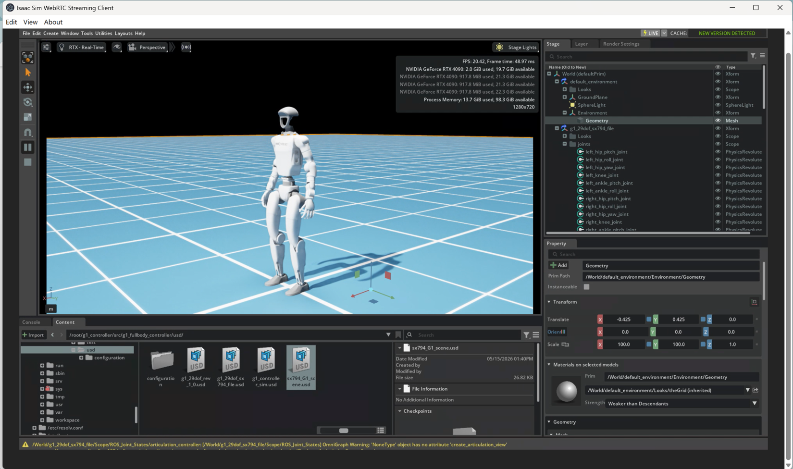
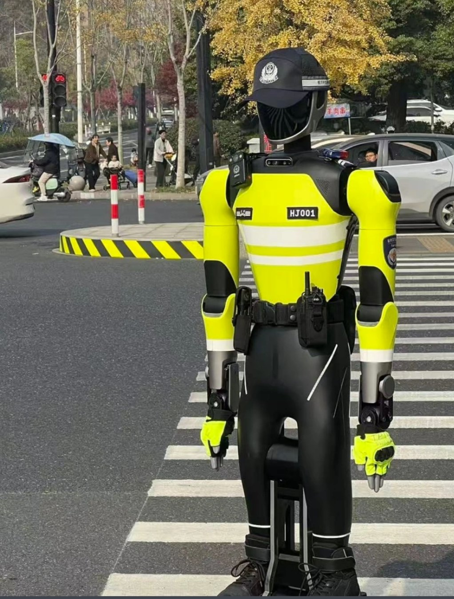

Industry internship · 2026
Humanoid Robotics & Reinforcement Learning
At Zhejiang SUPCON Information, I developed and validated ROS 2 controller components and worked with Unitree G1/H2 humanoid platforms. My work involved Isaac Lab locomotion tasks, training configuration and simulation validation, as well as H2 VR teleoperation tests and SLAM navigation testing.
Images: Isaac Sim humanoid scene and field robot photograph supplied by the project author. Internship code is not publicly shared.